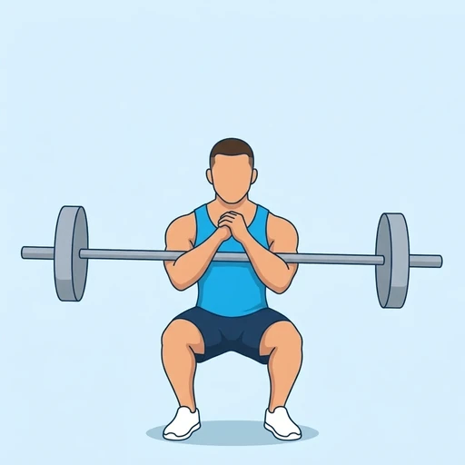

Barbell Zercher Squat Hold
An isometric version of the Zercher squat: you squat down with the barbell in the crooks of your elbows and hold the bottom position. The quadriceps, glutes and the trunk stay under tension at the deepest point, while the arms and upper back keep the bar close to you.
Upper legs · Barbell · Advanced

Muscles worked by the Barbell Zercher Squat Hold
Primary
Secondary
Also called: glute, glutes, gluteus maximus, buttocks, butt, quad.
Equipment
Also called: bar, olympic barbell, straight bar, olympic bar, power bar.
How to do the Barbell Zercher Squat Hold
- Set a barbell on a rack at about the height of your lower ribs, place the crooks of your elbows under the bar and clasp your hands in front of your chest.
- Lift the bar off the rack, step back and stand with your feet about shoulder-width apart.
- Brace your abs and keep your chest tall, then sit down and back until your thighs are about parallel to the floor.
- Stop at the bottom and hold, with your elbows resting inside your knees and your knees pushed out over your toes.
- Keep the bar close to your abdomen and your back straight while you hold for the planned time.
- Drive up through your feet to stand and return the bar to the rack.
Form tips
- Wrap a towel or a barbell pad around the bar, since it presses into the elbows and the abdomen.
- Use safety pins set just below your bottom position, since a long hold at depth is tiring.
- Keep the chest tall; if the bar pulls you forward and your back rounds, the weight is too heavy.
At a glance
| Body part | Upper legs |
|---|---|
| Category | Strength |
| Force type | Static |
| Mechanic | Compound |
| Difficulty | Advanced |
| Equipment | Barbell |
| Goals | Strength, Endurance |
| Tags | Leg day |
| MET | 6.0 (metabolic equivalent, for calorie estimates) |
| Unilateral | No |
| Bodyweight | No |
| Dataset id | barbell-zercher-squat-hold |
Barbell Zercher Squat Hold in German & Spanish
| German | Langhantel-Zercher-Kniebeuge Iso-Halt |
|---|---|
| Spanish | Sentadilla Zercher Isométrica |
Descriptions, instructions and tips ship in all three languages in the JSON.
Related exercises
Exercise data (JSON)
The record below is exactly what exercises.json ships for this exercise — names, descriptions, instructions and tips in English, German and Spanish.
{
"id": "barbell-zercher-squat-hold",
"name_en": "Barbell Zercher Squat Hold",
"name_de": "Langhantel-Zercher-Kniebeuge Iso-Halt",
"name_es": "Sentadilla Zercher Isométrica",
"description_en": "An isometric version of the Zercher squat: you squat down with the barbell in the crooks of your elbows and hold the bottom position. The quadriceps, glutes and the trunk stay under tension at the deepest point, while the arms and upper back keep the bar close to you.",
"description_de": "Eine isometrische Variante der Zercher-Kniebeuge: Du gehst mit der Langhantel in den Ellbeugen in die Hocke und hältst die untere Position. Quadrizeps, Gesäßmuskeln und Rumpf stehen am tiefsten Punkt unter Spannung, während Arme und oberer Rücken die Stange nah am Körper halten.",
"description_es": "Una versión isométrica de la sentadilla Zercher: bajas en sentadilla con la barra en el pliegue de los codos y mantienes la posición baja. Los cuádriceps, los glúteos y el tronco permanecen bajo tensión en el punto más profundo, mientras que los brazos y la parte alta de la espalda mantienen la barra cerca de ti.",
"category": "strength",
"force_type": "static",
"mechanic": "compound",
"difficulty": "advanced",
"equipment": "barbell",
"body_part": "upper_legs",
"primary_muscles": [
"gluteus_maximus",
"quadriceps"
],
"secondary_muscles": [
"biceps_brachii",
"erector_spinae",
"hamstrings"
],
"goals": [
"strength",
"endurance"
],
"tags": [
"leg_day"
],
"variation_group": "squat",
"is_unilateral": false,
"is_bodyweight": false,
"instructions_en": [
"Set a barbell on a rack at about the height of your lower ribs, place the crooks of your elbows under the bar and clasp your hands in front of your chest.",
"Lift the bar off the rack, step back and stand with your feet about shoulder-width apart.",
"Brace your abs and keep your chest tall, then sit down and back until your thighs are about parallel to the floor.",
"Stop at the bottom and hold, with your elbows resting inside your knees and your knees pushed out over your toes.",
"Keep the bar close to your abdomen and your back straight while you hold for the planned time.",
"Drive up through your feet to stand and return the bar to the rack."
],
"instructions_de": [
"Lege eine Langhantel in einem Rack etwa auf Höhe deiner unteren Rippen ab, platziere die Ellbeugen unter der Stange und falte die Hände vor der Brust.",
"Hebe die Stange aus dem Rack, gehe zurück und stelle dich mit etwa schulterbreit stehenden Füßen hin.",
"Spanne den Bauch an und halte die Brust aufrecht, dann setze dich nach unten und hinten, bis die Oberschenkel etwa parallel zum Boden sind.",
"Stoppe unten und halte, die Ellbogen ruhen innerhalb der Knie und die Knie sind über die Zehen nach außen gedrückt.",
"Halte die Stange nah am Bauch und den Rücken gerade, während du für die geplante Zeit hältst.",
"Drücke dich über die Füße in den Stand und lege die Stange zurück ins Rack."
],
"instructions_es": [
"Coloca una barra en un rack a la altura aproximada de las costillas inferiores, pon el pliegue de los codos bajo la barra y entrelaza las manos delante del pecho.",
"Levanta la barra del rack, da un paso atrás y colócate con los pies separados aproximadamente al ancho de los hombros.",
"Contrae los abdominales y mantén el pecho elevado; luego siéntate hacia atrás y abajo hasta que los muslos queden aproximadamente paralelos al suelo.",
"Detente abajo y mantén la posición, con los codos apoyados por dentro de las rodillas y las rodillas empujadas hacia fuera sobre las puntas de los pies.",
"Mantén la barra cerca del abdomen y la espalda recta mientras aguantas el tiempo previsto.",
"Empuja con los pies para ponerte de pie y devuelve la barra al rack."
],
"tips_en": [
"Wrap a towel or a barbell pad around the bar, since it presses into the elbows and the abdomen.",
"Use safety pins set just below your bottom position, since a long hold at depth is tiring.",
"Keep the chest tall; if the bar pulls you forward and your back rounds, the weight is too heavy."
],
"tips_de": [
"Wickle ein Handtuch oder ein Hantelpolster um die Stange, da sie in Ellbogen und Bauch drückt.",
"Nutze Sicherheits-Pins knapp unter deiner unteren Position, denn ein langer Halt in der Tiefe ist ermüdend.",
"Halte die Brust aufrecht; zieht dich die Stange nach vorn und der Rücken rundet sich, ist das Gewicht zu schwer."
],
"tips_es": [
"Envuelve la barra con una toalla o un protector de barra, ya que presiona los codos y el abdomen.",
"Usa pines de seguridad colocados justo por debajo de tu posición baja, ya que un aguante largo en profundidad resulta agotador.",
"Mantén el pecho elevado; si la barra te tira hacia delante y la espalda se redondea, el peso es demasiado alto."
],
"met": 6.0,
"images": {
"flat": {
"main": "images/flat/barbell-zercher-squat-hold-main.webp"
}
}
}Fetch just this exercise
const { exercises } = await fetch(
"https://exercise-dataset.com/exercises.json"
).then(r => r.json());
const ex = exercises.find(e => e.id === "barbell-zercher-squat-hold");Free for personal and commercial in-app use with attribution (“Exercise data by RepDB”) — see the license and ready-made attribution snippets. Redistributing the data as a dataset or API is not permitted.